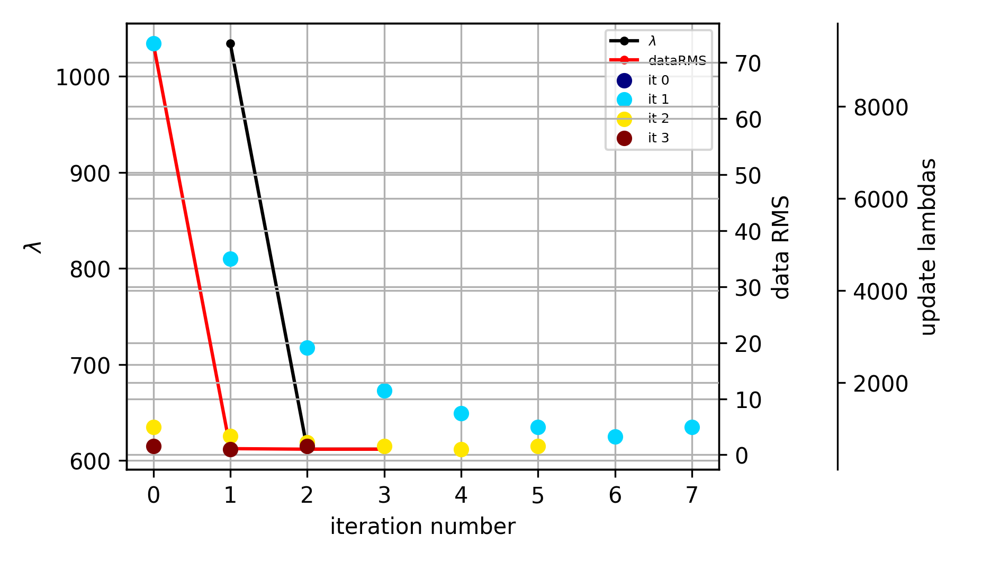
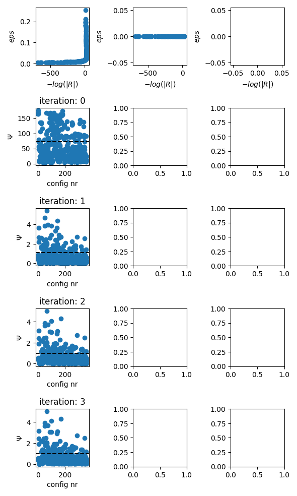
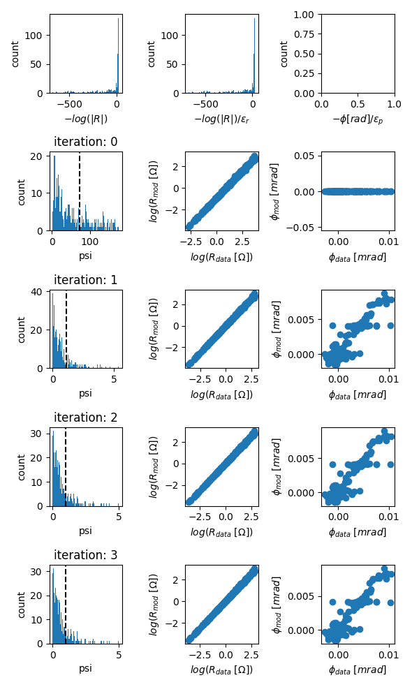
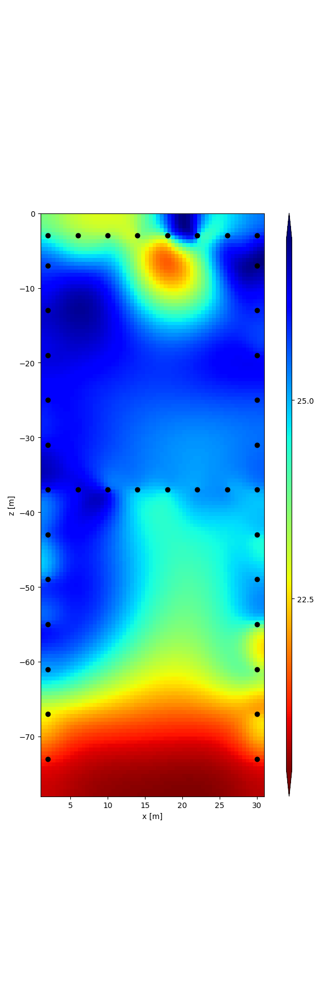
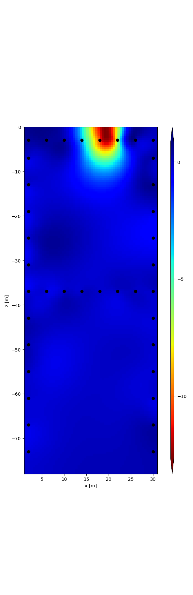

Note
Click here to download the full example code
A single-frequency inversion (sEIT container)
Full processing of one frequency of one timestep of the data from Weigand and Kemna 2017 (Biogeosciences).
This example uses the sEIT container to load multi-frequency data from the original measurement data.
imports
import os
import numpy as np
import reda
import reda.utils.geometric_factors as geom_facs
from reda.utils.fix_sign_with_K import fix_sign_with_K
import reda.importers.eit_fzj as eit_fzj
define an output directory for all files
output_directory = 'output_single_freq_inversion_sEIT'
import the sEIT data set
seit = reda.sEIT()
seit.import_eit_fzj(
'data/bnk_raps_20130408_1715_03_einzel.mat',
'data/configs.dat'
)
Out:
Constructing four-point measurements
Summary:
a b m n r frequency rpha
count 67375.000000 67375.000000 67375.000000 67375.000000 67375.000000 67375.000000 67375.000000
mean 17.907532 20.831169 19.803636 18.691429 -39.568144 2577.580109 473.723981
std 10.333167 10.677015 10.688968 10.531681 188.261222 8258.716055 2729.735973
min 1.000000 2.000000 1.000000 1.000000 -1946.161112 0.462963 -3141.592649
25% 10.000000 12.000000 11.000000 10.000000 -36.953302 29.411765 -3131.399200
50% 17.000000 22.000000 21.000000 18.000000 -5.837783 122.222220 5.510219
75% 27.000000 30.000000 29.000000 27.000000 -0.172101 700.000000 3139.297772
max 37.000000 38.000000 38.000000 38.000000 1946.481734 45000.000000 3141.592652
with reda.CreateEnterDirectory(output_directory):
# export the data into CRTomo-style data files. Each frequency gets its own
# file
seit.export_to_crtomo_multi_frequency('result_raw_data')
# just for demonstration purposes, data could be imported from this
# directory:
# create a new sEIT container
seit_temp = reda.sEIT()
seit_temp.import_crtomo('result_raw_data')
# delete it to prevent any confusions
del(seit_temp)
Out:
Summary:
a b m n r frequency rpha
count 67375.000000 67375.000000 67375.000000 67375.000000 67375.000000 67375.000000 67375.000000
mean 17.907532 20.831169 19.803636 18.691429 -39.568144 2577.580109 473.723981
std 10.333167 10.677015 10.688968 10.531681 188.261222 8258.716055 2729.735973
min 1.000000 2.000000 1.000000 1.000000 -1946.161112 0.462963 -3141.592649
25% 10.000000 12.000000 11.000000 10.000000 -36.953302 29.411765 -3131.399201
50% 17.000000 22.000000 21.000000 18.000000 -5.837783 122.222220 5.510219
75% 27.000000 30.000000 29.000000 27.000000 -0.172101 700.000000 3139.297772
max 37.000000 38.000000 38.000000 38.000000 1946.481734 45000.000000 3141.592652
this is a container measurement, we need to compute geometric factors using numerical modeling Note that this only work if CRMod is available
Out:
SETTINGS
{'rho': 100, 'elem': 'data/elem.dat', 'elec': 'data/elec.dat', 'sink_node': '6467', '2D': True}
2D modeling
apply correction factors, as described in Weigand and Kemna, 2017 BG
corr_facs_nor = np.loadtxt('data/corr_fac_avg_nor.dat')
corr_facs_rec = np.loadtxt('data/corr_fac_avg_rec.dat')
corr_facs = np.vstack((corr_facs_nor, corr_facs_rec))
seit.data, cfacs = eit_fzj.apply_correction_factors(seit.data, corr_facs)
apply some filters import IPython IPython.embed()
seit.filter('r < 0')
seit.filter('rho_a < 15 or rho_a > 35')
seit.filter('rpha < - 40 or rpha > 3')
seit.filter('rphadiff < -5 or rphadiff > 5')
seit.filter('k > 400')
seit.filter('rho_a < 0')
seit.filter('a == 12 or b == 12 or m == 12 or n == 12')
seit.filter('a == 13 or b == 13 or m == 13 or n == 13')
# seit.filter_incomplete_spectra(flimit=300, percAccept=85)
seit.print_data_journal()
seit.print_log()
Out:
--- Data Journal Start ---
2021-12-10 15:47:45.733483
A filter was applied with query "r < 0". In total 543 records were removed
A filter was applied with query "rho_a < 15 or rho_a > 35". In total 13919 records were removed
A filter was applied with query "rpha < - 40 or rpha > 3". In total 10016 records were removed
A filter was applied with query "rphadiff < -5 or rphadiff > 5". In total 14451 records were removed
A filter was applied with query "k > 400". In total 3619 records were removed
A filter was applied with query "rho_a < 0". In total 0 records were removed
A filter was applied with query "a == 12 or b == 12 or m == 12 or n == 12". In total 1003 records were removed
A filter was applied with query "a == 13 or b == 13 or m == 13 or n == 13". In total 934 records were removed
--- Data Journal End ---
2021-12-10 15:47:45,687 - reda.main.logger - INFO - Data sized changed from 67375 to 66832
2021-12-10 15:47:45,696 - reda.main.logger - INFO - Data sized changed from 66832 to 52913
2021-12-10 15:47:45,704 - reda.main.logger - INFO - Data sized changed from 52913 to 42897
2021-12-10 15:47:45,710 - reda.main.logger - INFO - Data sized changed from 42897 to 28446
2021-12-10 15:47:45,715 - reda.main.logger - INFO - Data sized changed from 28446 to 24827
2021-12-10 15:47:45,721 - reda.main.logger - INFO - Data sized changed from 24827 to 24827
2021-12-10 15:47:45,726 - reda.main.logger - INFO - Data sized changed from 24827 to 23824
2021-12-10 15:47:45,733 - reda.main.logger - INFO - Data sized changed from 23824 to 22890
export normal data to volt.dat file note that this is not required for the subsequent code and could be completely removed !!!
with reda.CreateEnterDirectory(output_directory):
seit.export_to_crtomo_one_frequency('volt.dat', 70.0, 'nor')
alternatively: directly create a tdman object that represents a single-frequency inversion with CRTomo
import crtomo
grid = crtomo.crt_grid('data/elem.dat', 'data/elec.dat')
tdman = seit.export_to_crtomo_td_manager(grid, frequency=70.0, norrec='nor')
# set inversion settings
tdman.crtomo_cfg['robust_inv'] = 'F'
tdman.crtomo_cfg['mag_abs'] = 0.012
tdman.crtomo_cfg['mag_rel'] = 0.5
tdman.crtomo_cfg['hom_bg'] = 'T'
tdman.crtomo_cfg['d2_5'] = 0
tdman.crtomo_cfg['fic_sink'] = 'T'
tdman.crtomo_cfg['fic_sink_node'] = 6467
# run the inversion, use the given output directory to store the CRTomo
# directory structure for later use
# only invert if the output directory does not exists
outdir = '{}/tomodir_inversion'.format(output_directory)
if not os.path.isdir(outdir):
tdman.invert(
catch_output=False,
output_directory=outdir,
)
else:
tdman.read_inversion_results(outdir)
print('Statistics of last iteration:')
print(tdman.inv_stats.iloc[-1])
Out:
This grid was sorted using CutMcK. The nodes were resorted!
Rectangular grid found
is robust False
Info: res_m.diag not found: output_single_freq_inversion_sEIT/tomodir_inversion/inv/res_m.diag
/home/mweigand/Programme/crtomo_tools/examples/02_simple_inversion
Info: ata.diag not found: output_single_freq_inversion_sEIT/tomodir_inversion/inv/ata.diag
/home/mweigand/Programme/crtomo_tools/examples/02_simple_inversion
Statistics of last iteration:
iteration 3
main_iteration 3
it_type DC/IP
type main
dataRMS 1.001
magRMS 1.0
phaRMS 0.0
lambda 611.7
roughness 0.3201
cgsteps 74.0
nrdata 361.0
steplength 1.0
stepsize 0.00518
l1ratio NaN
Name: 20, dtype: object
evolution of the inversion
fig = tdman.plot_inversion_evolution()
with reda.CreateEnterDirectory(output_directory):
fig.savefig('inversion_evolution.png')
# the statistics are stored in a data frame
print(tdman.inv_stats)
print(tdman.inv_stats.columns)

Out:
#############################
0
Empty DataFrame
Columns: [iteration, main_iteration, it_type, type, dataRMS, magRMS, phaRMS, lambda, roughness, cgsteps, nrdata, steplength, stepsize, l1ratio]
Index: []
#############################
1
iteration main_iteration it_type type dataRMS magRMS phaRMS lambda roughness cgsteps nrdata steplength stepsize l1ratio
1 1 1 DC/IP update 1.614 NaN NaN 9360.0 0.06463 100.0 NaN 1.0 7520.0 NaN
2 2 1 DC/IP update 1.412 NaN NaN 4680.0 0.11070 78.0 NaN 1.0 7490.0 NaN
3 3 1 DC/IP update 1.286 NaN NaN 2758.0 0.16990 64.0 NaN 1.0 7470.0 NaN
4 4 1 DC/IP update 1.186 NaN NaN 1822.0 0.26770 54.0 NaN 1.0 7440.0 NaN
5 5 1 DC/IP update 1.126 NaN NaN 1330.0 0.39070 47.0 NaN 1.0 7420.0 NaN
6 6 1 DC/IP update 1.101 NaN NaN 1034.0 0.51690 42.0 NaN 1.0 7390.0 NaN
7 7 1 DC/IP update 1.143 NaN NaN 827.0 0.74460 35.0 NaN 1.0 7350.0 NaN
8 8 1 DC/IP update 36.710 NaN NaN 1034.0 0.12920 42.0 NaN 0.5 3700.0 NaN
#############################
2
iteration main_iteration it_type type dataRMS magRMS phaRMS lambda roughness cgsteps nrdata steplength stepsize l1ratio
10 0 2 DC/IP update 1.0950 NaN NaN 1034.0 0.2309 76.0 NaN 1.0 19.80 NaN
11 1 2 DC/IP update 1.0560 NaN NaN 832.6 0.2639 75.0 NaN 1.0 19.00 NaN
12 2 2 DC/IP update 1.0260 NaN NaN 701.2 0.2930 75.0 NaN 1.0 18.50 NaN
13 3 2 DC/IP update 1.0030 NaN NaN 611.7 0.3183 74.0 NaN 1.0 18.10 NaN
14 4 2 DC/IP update 0.9853 NaN NaN 548.6 0.3399 74.0 NaN 1.0 17.80 NaN
15 5 2 DC/IP update 1.0350 NaN NaN 611.7 0.3587 74.0 NaN 0.5 9.04 NaN
#############################
3
iteration main_iteration it_type type dataRMS magRMS phaRMS lambda roughness cgsteps nrdata steplength stepsize l1ratio
17 0 3 DC/IP update 1.001 NaN NaN 611.7 0.3201 74.0 NaN 1.0 0.00518 NaN
18 1 3 DC/IP update 0.984 NaN NaN 549.7 0.3414 62.0 NaN 1.0 0.02230 NaN
19 2 3 DC/IP update 1.002 NaN NaN 611.7 0.3192 74.0 NaN 0.5 0.00259 NaN
iteration main_iteration it_type type dataRMS magRMS phaRMS lambda roughness cgsteps nrdata steplength stepsize l1ratio
0 0 0 DC/IP main 73.3700 73.0 3.0 NaN NaN NaN 354.0 NaN NaN NaN
1 1 1 DC/IP update 1.6140 NaN NaN 9360.0 0.06463 100.0 NaN 1.0 7520.00000 NaN
2 2 1 DC/IP update 1.4120 NaN NaN 4680.0 0.11070 78.0 NaN 1.0 7490.00000 NaN
3 3 1 DC/IP update 1.2860 NaN NaN 2758.0 0.16990 64.0 NaN 1.0 7470.00000 NaN
4 4 1 DC/IP update 1.1860 NaN NaN 1822.0 0.26770 54.0 NaN 1.0 7440.00000 NaN
5 5 1 DC/IP update 1.1260 NaN NaN 1330.0 0.39070 47.0 NaN 1.0 7420.00000 NaN
6 6 1 DC/IP update 1.1010 NaN NaN 1034.0 0.51690 42.0 NaN 1.0 7390.00000 NaN
7 7 1 DC/IP update 1.1430 NaN NaN 827.0 0.74460 35.0 NaN 1.0 7350.00000 NaN
8 8 1 DC/IP update 36.7100 NaN NaN 1034.0 0.12920 42.0 NaN 0.5 3700.00000 NaN
9 1 1 DC/IP main 1.1010 1.0 1.0 1034.0 0.51690 42.0 361.0 1.0 7392.00000 NaN
10 0 2 DC/IP update 1.0950 NaN NaN 1034.0 0.23090 76.0 NaN 1.0 19.80000 NaN
11 1 2 DC/IP update 1.0560 NaN NaN 832.6 0.26390 75.0 NaN 1.0 19.00000 NaN
12 2 2 DC/IP update 1.0260 NaN NaN 701.2 0.29300 75.0 NaN 1.0 18.50000 NaN
13 3 2 DC/IP update 1.0030 NaN NaN 611.7 0.31830 74.0 NaN 1.0 18.10000 NaN
14 4 2 DC/IP update 0.9853 NaN NaN 548.6 0.33990 74.0 NaN 1.0 17.80000 NaN
15 5 2 DC/IP update 1.0350 NaN NaN 611.7 0.35870 74.0 NaN 0.5 9.04000 NaN
16 2 2 DC/IP main 1.0030 1.0 0.0 611.7 0.31830 74.0 361.0 3.0 18.08000 NaN
17 0 3 DC/IP update 1.0010 NaN NaN 611.7 0.32010 74.0 NaN 1.0 0.00518 NaN
18 1 3 DC/IP update 0.9840 NaN NaN 549.7 0.34140 62.0 NaN 1.0 0.02230 NaN
19 2 3 DC/IP update 1.0020 NaN NaN 611.7 0.31920 74.0 NaN 0.5 0.00259 NaN
20 3 3 DC/IP main 1.0010 1.0 0.0 611.7 0.32010 74.0 361.0 1.0 0.00518 NaN
Index(['iteration', 'main_iteration', 'it_type', 'type', 'dataRMS', 'magRMS',
'phaRMS', 'lambda', 'roughness', 'cgsteps', 'nrdata', 'steplength',
'stepsize', 'l1ratio'],
dtype='object')
evolution of data misfits
fig = tdman.plot_eps_data()
fig = tdman.plot_eps_data_hist()
# eps data is found here:
tdman.eps_data


r = tdman.plot.plot_elements_to_ax(
tdman.a['inversion']['rmag'][-1],
plot_colorbar=True,
cmap_name='jet_r',
)
with reda.CreateEnterDirectory(output_directory):
r[0].savefig('rmag.png', bbox_inches='tight')
r = tdman.plot.plot_elements_to_ax(
tdman.a['inversion']['rpha'][-1],
plot_colorbar=True,
cmap_name='jet_r',
)
with reda.CreateEnterDirectory(output_directory):
r[0].savefig('rpha_last_it.png', bbox_inches='tight')


Total running time of the script: ( 0 minutes 36.130 seconds)